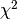

Classif module¶
This module is gathering all the fonctionnality conceived to process an image database classification.
- Classif.KNN(matSig, classId, k, Sig, dType)[source]¶
Function for computing the K-nn method.
This function takes as argument the dictionarry of know signatures associate with their classID, and the signature of the image to classify
This function is called as shown below :
ClassId = KNN(matSig, classId ,k,Sig, dType)
Parameters: - matSig (np.ndarray) – The matrix which contains the dictionnary of know signature.
- classId (np.ndarray) – The array containing the class ids which corresponds to the signatures in matSig.
- k (int) – Number of nearest neightbor to keep for the class attribution.
- Sig (np.ndarray) – The array which contains the signature of the image to classify.
- dType (int) – The type of difference to compute, if = 0 => Euclidian distance, if = 1 => .
Returns: The classID to attribute for the image to classify
Return type: float
- Classif.K_means(Vectors, nb_centroid, iterat)[source]¶
Function for computing the K-means method.
This function find center of vectors and groups input samples
This function is called as shown below :
[centroid_vec, val_dist] = K_means(all_desc, nb_word, 5)
Parameters: - Vectors (np.ndarray) – The matrix which contains the whole descriptors of the database.
- nb_centroid (int) – Number of words you want.
- iterat (int) – Number of iteration you want to find your centers.
Return centroid_vec: centers of vectors
Return type: nd.array
Return val_dist: indices attribute to the vectors
Return type: nd.array
- Classif.Signature_img(Vectors, val_dist, nb_kp_per_img, nb_img, nb_word)[source]¶
Function for computing the Signature of the images.
This function is called as shown below :
sig = Signature_img(all_desc, val_dist, nb_kp_per_img, nb_img, nb_word)
Parameters: - Vectors (np.ndarray) – The matrix which contains the whole descriptors of the database.
- val_dist (np.ndarray) – Matrix which contains the indices attribute to the vectors.
- nb_kp_per_img (np.ndarray) – Number of Key-points per images.
- nb_img (int) – Number of images in the database.
- nb_word (int) – Number of words in the Bag of Words.
Return sig: Matric which contains all the signature of the database
Return type: np.ndarray